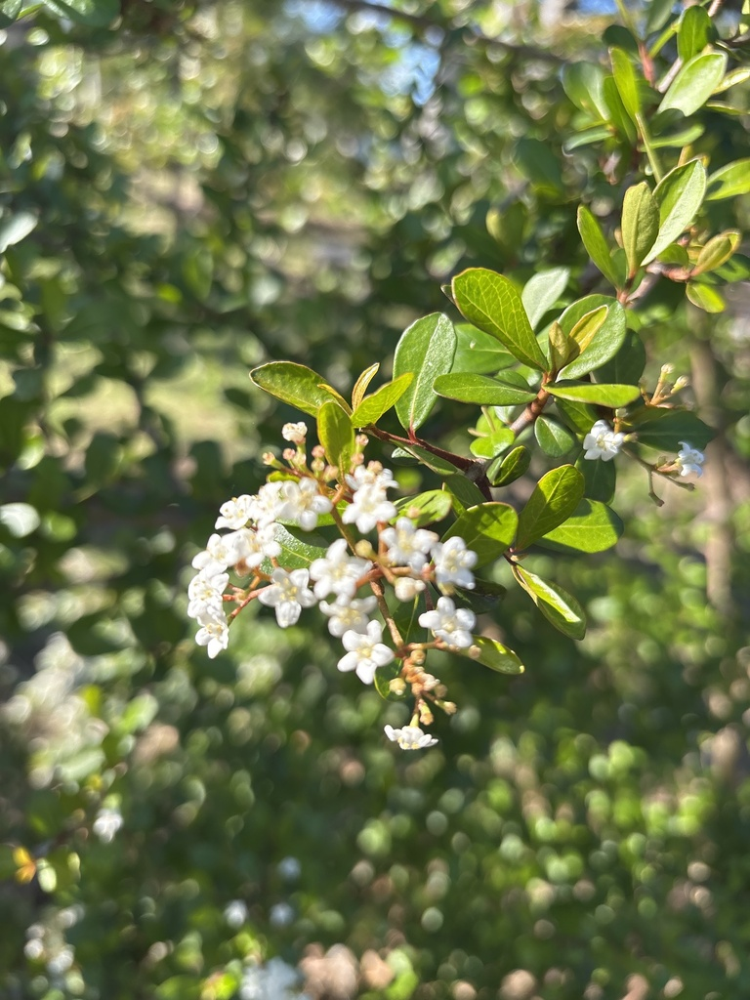

- Every late winter, Walter's Viburnum sets off a botanical alarm clock. It covers itself in small white flower clusters — locally nicknamed Florida snow — at the precise moment the rest of the flatwoods are still completely dormant. For native bees emerging into a barren landscape, this shrub is often the only thing open for business.
- Look closely at one of those white flower clusters and you will catch the plant running a con: the large, showy blooms ringing the outside are sterile — pure advertising — while the tiny fertile flowers doing the real reproductive work sit quietly at the center. The plant constructs a flashing billboard out of fake petals just to get pollinators to land on the right spot.
- Beneath the foliage, a high-stakes protection racket plays out every spring. Spring azure caterpillars secrete a sugary fluid to bribe local ants into service as bodyguards — the ants patrol the leaves and drive off wasps and spiders in exchange for the sweet payment. Walter's Viburnum is the stadium where this deal goes down.
- Walter's Viburnum is named for Thomas Walter (1740–1789), an English-born planter-botanist in South Carolina who described it in his Flora Caroliniana — one of the earliest systematic accounts of southeastern plants.
Native to Florida and the southeastern coastal plain (South Carolina, Georgia, Alabama, and Florida, except the Keys). Found in pine flatwoods, hydric hammocks, riverbanks, swamp borders, and drier uplands. Member of Viburnaceae, the same family as the park's non-native Sweet Viburnum.
(Older plant labels and field guides may place it in the honeysuckle family, Caprifoliaceae, or in Adoxaceae - it has since been moved to Viburnaceae.)
- Walter's Viburnum is named for Thomas Walter (1740-1789), an English-born planter and botanist in South Carolina who described the species in his Flora Caroliniana.
- It is one of the most adaptable native shrubs in Florida - evergreen to semi-evergreen (it drops its old leaves late in winter, just as the new ones push out), growing from seasonally wet flatwoods to dry uplands, in full sun or full shade.
- Its early-spring flush of small white flower clusters is showy enough to have earned the nickname Florida snow, and it arrives when little else in the flatwoods is blooming - making it a critical early-season pollen source for native bees emerging before the rest of the springtime buffet opens.
- Pollinators work the flowers for pollen more than nectar, since viburnum flowers are shallow and produce little nectar. The flat drupes that follow ripen from red to black through summer and fall and are taken by a range of birds.
- Left alone, the plant forms a dense, rounded shrub that can sucker into a thicket and eventually grow into a small tree to about 20 feet, occasionally taller. It tolerates hard pruning, which is why it is widely used as a native hedge or screen - a Florida-friendly stand-in for clipped boxwood. Dwarf cultivars such as 'Densa' are also sold.
Walter's Viburnum is a year-round anchor for wildlife. In late winter and early spring it is often the only pollen source open in the flatwoods, drawing native bees and small butterflies at a moment when almost nothing else is blooming. It is also a documented larval host for the spring azure butterfly (Celastrina ladon).
The summer-to-fall drupes, ripening from red to black, feed a range of songbirds, and the dense fine foliage is a favored nesting and cover site — cardinals in particular are regulars.
Turn over a fresh spring shoot and you may be stepping into the middle of a negotiation. Spring azure caterpillars secrete a sugary fluid from a specialized gland, and ants collect it like a crop — patrolling the leaves, chasing off parasitic wasps and hunting spiders in return for the sweet payment.
This hired-bodyguard arrangement, playing out on the undersides of the leaves, makes Walter's Viburnum not just a plant but a living arena for one of Florida's more theatrical ecological dramas.
Small, white, fragrant, in flat-topped clusters 2 to 3 inches across at the branch tips in late winter to early spring. Showy in mass — the famous Florida snow display.
The plant is running a deliberate con with those flower clusters. The large, showy blooms ringing the outer edge are sterile — they exist purely as a flashing neon sign to pull pollinators in from a distance. The small fertile flowers doing all the real reproductive work sit quietly in the center of the cluster, waiting for the visitors the fake ones recruited.
A flattened drupe ripening from green to red to black through summer and fall. Eaten by birds.
Small, dark green, leathery, ovate to spatulate (wider near the tip), about 1 to 2 inches long, opposite, with entire or slightly toothed margins; tiny glandular dots beneath. Evergreen to semi-evergreen, dropping old leaves late in winter as new growth appears.
Dense, fine-textured shrub to small tree, often suckering into a thicket; takes hard pruning as a hedge.
Look for the advertising edge: peer into the center of a white flower cluster and separate the large sterile outer blooms from the tiny fertile ones doing the actual work — the billboard from the factory floor.
Check the leaf tips: feel how small and wedge-shaped the leaves are, then compare them against the massive leathery leaves of the park's non-native Sweet Viburnum nearby — same family, completely different scale.
Flip a leaf for the guard detail: on a fresh spring shoot, look closely at the undersides for a spring azure caterpillar and the ants patrolling around it — if you find one, you are watching a protection contract being honored in real time.
The berries aren't a food source for people, but they're an important food for songbirds and other wildlife.
No significant toxicity to people or dogs is documented.
- © Beverly Burdette (CC-BY-NC), via iNaturalist